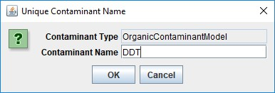
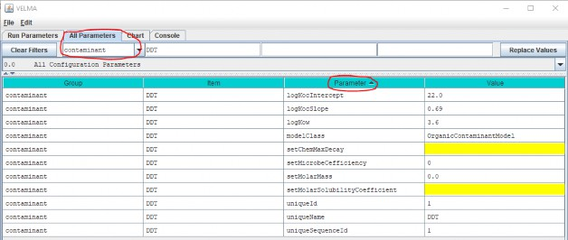

+
A.2 | Configure VELMA for Simulating Contaminant Fate and Transport
Overview (Tutorial A.2 - Configure VELMA for Simulating Contaminant Fate and Transport)
This document is a broad overview of how to configure VELMA 2.1 to model fate and transport of organic contaminants within watersheds. Summaries and instructions are provided for
- Configuration Steps for A VELMA Contaminant Simulation Run
- Adding a Contaminant Parameterization to a VELMA Configuration
- Parameters That Should Be Left Alone
- Decay Parameters
- Parameters for Sorbed/Aqueous Partitioning
- Specifying the Names of a Contaminant's Spatial Data Pools
- Contaminant Deposition
- Simulation Results for Contaminants
This Tutorial document is a companion to the two listed below:
- Tutorial A.1_HowTo_VELMA Contaminant Modeling Conceptual Framework
- Tutorial A.3 - VELMA Contaminant Modeling: Longfellow Creek Example
1.0 Introduction
VELMA supports the addition of one or more Organic Contaminants to a simulation configuration. Each contaminant is added as its own set of parameters, and models one specific organic contaminant (e.g., DDT) during a simulation run.
Organic contaminants added to a VELMA simulation configuration undergo degradation and lateral and vertical transport during each simulation step. No other processes occur for contaminants.
Currently, only one type of degradation is available, based on equations developed by C.S. Potter, et. al, and parameterized by microbe efficiency and a maximum decay factor.
Unlike VELMA's core chemistry pools (NH4-N, NO3-N, etc.), there is no global, initial amount of contaminant added to the simulation state at simulation start.
Configuring one or more contaminant parameterizations requires configuration of an equal number (or more) of VELMA disturbance parameterizations to introduce actual amounts of the contaminant into the simulation state. VELMA disturbances can be configured to introduce specific amounts of contaminant to specific locations of the simulation watershed and arbitrary steps during the simulation run.
Each parameterized contaminant adds its own surface and layered spatial data pools, and loss-tracking temporal data arrays to the simulation state at runtime. Spatial Data Writers may be configured for contaminant pools, but the pool key-name provided to the Spatial Data Writer parameterization is derived from a common root and the contaminant-specific parameterization pool names - this is unlike any other spatial data pool naming currently employed by the VELMA Simulation Application.
2.0 Overview: Configuration Steps for a VELMA Contaminant Simulation Run
Start with a proven VELMA simulation configuration - i.e., a simulation configuration .xml file that is already calibrated and known to run reliably and accurately for the study site.
Load that simulation configuration .xml file into JVelma, and immediately change its "Simulation Run Name" (i.e. the With the new copy of the proven simulation configuration loaded into JVelma, adding one or more contaminants involves the following steps for each contaminant you wish to add:
- Add a new Contaminant parameterization group to the simulation configuration.
- Add one or more Disturbance parameterization groups to the simulation configuration to introduce amounts of the contaminant to the simulation run and specific times and locations.
- (Optional) Add one or more Spatial Data Writer parameterization groups to produce spatially- explicit map results for the contaminant.
Note: The DailyResults and any configuration-specified Cell Data Writer .csv files automatically include columns for any contaminants added to simulation configuration. Only Spatial Data Writers must be explicitly parameterized.
Save the changes - the simulation configuration .xml is now ready for use with JVelma.
3.0 Adding a Contaminant Parameterization to a VELMA Configuration
With a proven VELMA simulation configuration loaded into JVelma,
click the Edit -> Contaminants -> "Add a New Contaminant" menu item, as shown below:

In the "Unique Contaminant Name" pop-up dialog that opens next, provide a name for the contaminant. The name should begin with an alphabet character, and may consist of only alpha-numeric and underscore ("_") characters, and must remain unique among all contaminants in the configuration.
Click OK in the "Unique Contaminant Name" dialog adds a new parameterization group to the simulation configuration, and changes JVelma's display to the "All Parameters" tab, with the Item-level filter set to only display the parameters for the newly-added contaminant.
(Click the "Parameter" column header to sort the parameters by name)
Some of the parameters have default values already set for them (although it is likely you will want to change them for the specific contaminant you are adding), some are set and should not be changed, and some are highlighted yellow, indicating that they are currently unset, and need to have values provided for them.
4.0 Parameters That Must Be Left Alone
The modelClass parameter is set by JVelma when you add the contaminant to the simulation configuration. Do Not Change this parameter's value. Ever.
The uniqueName parameter is set to the name you specified while adding the contaminant parameterization to the configuration. After that initial specification, we recommend never changing this parameter's value, because it is used as part of the name for the contaminant's spatial data pools.
If you do change uniqueName's value, any disturbances referencing its spatial data pools must update those pool names as well.
The uniqueId parameter was generated automatically and should be left as-is.
The uniqueSequenceId determines the sequence in which the contaminants are processed during each VELMA simulation step. It is provided for future, possible enhancements to the contaminants code that would let one contaminant interact with another. However, that functionality is currently unavailable, and the uniqueSequenceId values that JVelma generates for you can be left as-is.
5.0 Decay Parameters
The setMicrobeCefficiency parameter is the fractional (range [0.0, 1.0]) efficiency of microbe activity upon this organic contaminant.
setChemMaxDecay is the maximum daily decay rate constant (fraction per day) of this contaminant. Note: (Comptox ) et. al list the half-life for most organic contaminants, and the value for the setChemMaxDecay parameter can be calculated from the half-life. Various calculators are available on the web, for example: https://www.calculator.net/half-life-calculator.html
6.0 Parameters for Sorbed/Aqueous Partitioning
logKocIntercept (unitless) is the intercept parameter for the linear-regression equation describing the correlation of LogKoc to LogKow for this contaminant.
logKocSlope (unitless) is the slope parameter for the linear-regression equation describing the correlation of LogKox to LogKow for this contaminant.
logKow (units of log10 Kow) is the Octanol-water partition coefficient for this contaminant. setMolarMass is this contaminant's mass, in grams per mol (g/mol). setMolarSolubilityCoefficient is the solubility coefficient of this chemical in mol per liter (mol/L).
7.0 Specifying the Names of a Contaminant's Spatial Data Pools
A given contaminant parameterization is associated with 2 spatial data pools:
- A single-layer Surface Pool
- A multiple-layer “Layered” Pool
Both pools store per-cell (and per-cell, per-layer for the layered pool) quantities of the contaminant itself.
Unlike VELMA's core chemistry pools, contaminant spatial data pool names are constructed using a common prefix and a unique suffix. To provide proper key-name for disturbances or spatial data writers parameterized to reference or modify contaminant pool values, you must know how to construct the specific pool name for a specific contaminant pool.
The contaminant's surface pool prefix is "CONTAMINANT_SURFACE_" and the suffix is the contaminant's uniqueName parameter value shifted to all-uppercase.
Example:
If uniqueName = "Glysophate", the surface pool key-name is: CONTAMINANT_SURFACE_GLYSOPHATE.
Similarly, the contaminant's layered pool prefix is "CONTAMINANT_LAYERS_" and the suffix is the uniqueName parameter value, again, all-uppercase.
Example:
With uniqueName=DDT, the layered pool key-name is: CONTAMINANT_LAYERS_DDT.
8.0 Contaminant Deposition
Adding one or more OrganicContaminantModel parameterizations to a VELMA simulation configuration does not add any actual chemical amounts to the simulation run. To introduce amounts of the contaminant(s) into the contaminant pools, you'll need to parameterize one or more disturbance events.
You can use Surface Deposition disturbances or Set Spatial Data By Map disturbances (or one or more instances of both) to introduce contaminant amounts into the contaminant pools.
For general information on how to configure these disturbances, see the following
- Surface Deposition: Tutorial E.3 - Surface Chemical Deposition
- Set Spatial Data by Map: Tutorial D.4 - Create Spatial Soil and Plant Chemistry Pools
The important difference between using the above disturbances with VELMA's core chemistry pools and with contaminants is that you must provide the prefix+suffix contaminant pool names to the disturbance, as described in the section "Specifying the Names of a Contaminant's Spatial Data Pools" above, rather than simply looking up the key-names in a table as you would for (example) NO3.
9.0 Simulation Results for Contaminants
When a VELMA simulation configuration contains one or more contaminants, an additional daily results file is written as part of the simulation's results. The file is named DailyContaminantResults.csv and contains daily-averaged values for each contaminant's surface and layered pools as well as surface and layered watershed loss amounts (the amount calculated to have left the watershed via transfer from non- channel to channel cells).
Additionally, Cell Data Writers specified for a VELMA simulation configuration contain rows reporting the surface and layer amounts, and the surface and layer lateral-outflow amounts for each contaminant in the simulation configuration.
Column names for contaminant results mimic (with slight variations) the prefix-suffix rules outlined in the "Specifying the Names of a Contaminant's Spatial Data Pools" section earlier in this document: Any contaminant results data column will begin with the keyword "CONTAMINANT_" (or "Contaminant_" in some cases). Surface-data columns follow CONTAMINANT_ with "SURFACE", and finally, after these keywords, the uniqueName value for the specific CONTAMINANT appears.